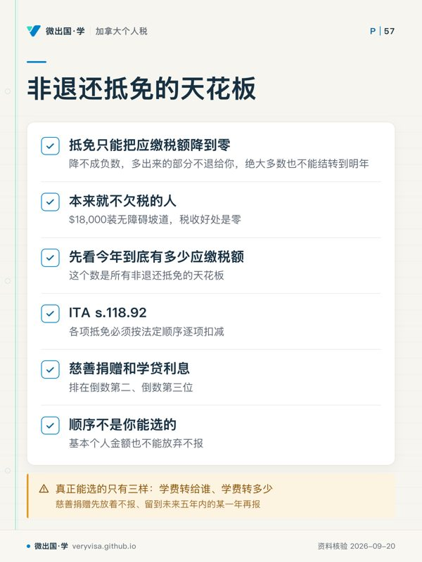
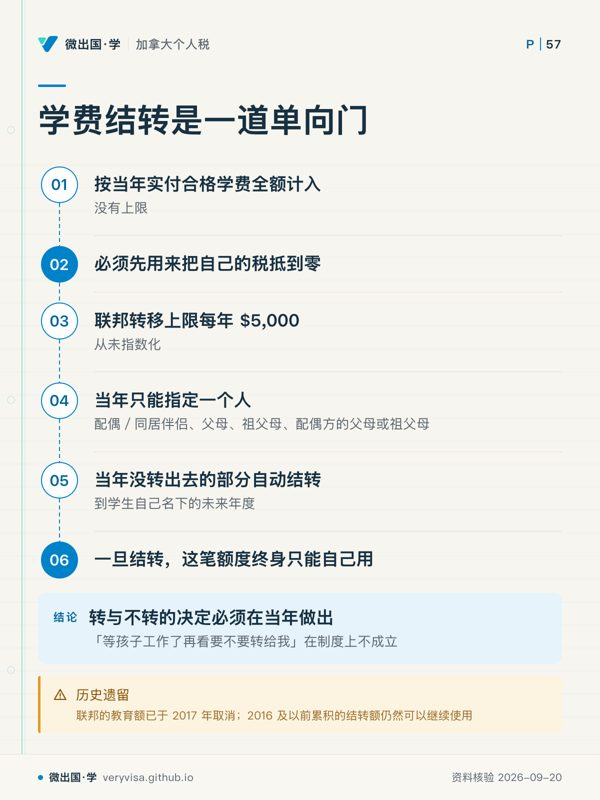
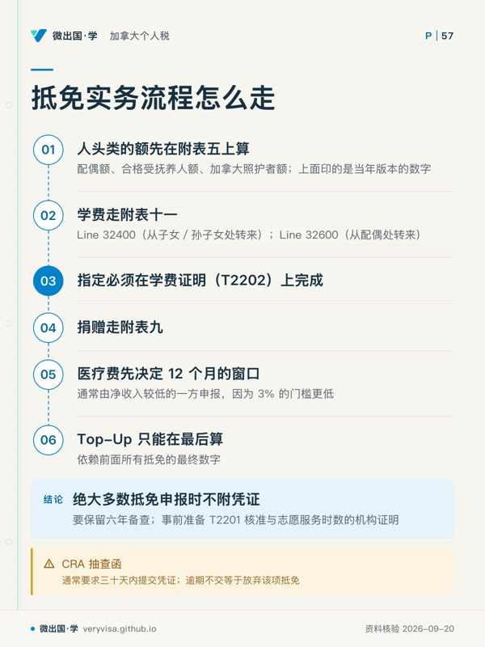

核实日期：2026-10-30｜本页口径：2026 税年（2027 年 2–4 月申报）。本页所有金额与百分比逐年指数化或随立法变动，下次复核 2027-01-31。年度数字总表另见 加拿大报税会变的数字：2026 税年总表与它们各自的定值机制（Federal Tax Numbers 2026）；本页只保留讲清机制所必需的数字，不重复长表。
非退还税收抵免（non-refundable tax credit）是 T1 申报表第五步里最长的一段——从基本个人金额一路排到股息抵免，二十几格，每一格都有自己的资格条件、上限、递减规则和凭证要求。2026 税年这一段发生了一件十年一遇的事：抵免率从 15% 降到了 14%，于是每一格抵免额的实际价值都被重算了一遍，国会还为此单独造了一项新抵免来打补丁。这一页把这一段讲清楚：抵免和扣除到底差在哪、抵免率是怎么被最低税阶绑定的、Top-Up Tax Credit 这个补丁的公式是什么、每一格 2026 税年的现行数字是多少（对照考试口径的 2024 税年值）、已经废掉的那几格该怎么处理。这一页帮你判断某一笔支出该走抵免还是走扣除，算出高收入者被削掉的基本个人金额是多少，并且在填表之前就知道哪几格自己一分钱也拿不到。
ℹ️
本页的「历史口径那一列」是什么意思
三列表里的「2024 税年（历史口径）」一列，是通行培训材料定稿时的快照。它不是错的，它是过期的——只在补报或更正 2024 年度申报表时才用得上。2026 税年报税一律用「现行」那一列。
一、制度设计与底层逻辑：为什么同样一块钱，有的走扣除、有的走抵免
本节回答This section answers 抵免法定扣减顺序与后部浪费风险Statutory credit claiming order and back-end credit wastage risks 本章考题 1Question 1
1.1 两条路的分岔点：在「算收入」时减，还是在「算税」时减

加拿大个人所得税的计算顺序是先算出应税收入（taxable income），再按累进税率算出税额，最后才拿抵免去冲抵税额。扣除（deduction）作用在第一段，抵免（credit）作用在第三段——分岔点就在这里，而分岔的后果是：
一笔 $1,000 的扣除，减少的是应税收入，省下来的税等于 $1,000 乘以你的边际税率。2026 税年，落在最高联邦档（33%）的人省 $330，落在最低档（14%）的人只省 $140。同一笔支出，收入越高的人得到的好处越大。
一笔 $1,000 的抵免额，则要先乘以一个固定的抵免率才变成抵掉的税。这个抵免率对所有人一样，谁也不比谁多。所以 $1,000 的抵免额在 2026 税年对每个人都值 $140——不管你年收入是三万还是三百万。
这就是整套制度最重要的一条底层逻辑：扣除是累进的、抵免是拉平的。政府想鼓励一件事而又不想让高收入者拿走大头时，就把它写成抵免；反过来，注册退休储蓄计划供款、育儿费用、搬家费用这类被认为「本来就不该算进应税能力」的支出，才写成扣除。同一件事也可能被劈成两半分走两条路——本页第 2.7 节要讲的 CPP 供款就是活生生的例子：同一张 T4 上的一笔钱，基础段走抵免、增强段走扣除。
1.2 抵免率为什么会跟着最低税阶动
《所得税法》(Income Tax Act, ITA) 在计算这些抵免时，反复用同一个词：appropriate percentage（适用百分比）。这个词在 s.248(1) 的定义只有一句话——它指的是 s.117(2) 里那个最低的税率百分比。所以「抵免率等于最低税阶税率」不是惯例，是法律定义直接绑定的结果。
绑定的道理也说得通：非退还抵免的原始设计意图是「把一部分收入排除在纳税之外」。16,452 元 的基本个人金额，本意是「前 16,452 元 的收入不该被课税」。如果这笔收入真的没有被课税，它本来会落在最低那一档里，所以按最低档税率折算成税额，逻辑自洽。
但这条绑定有一个副作用，2026 税年第一次显现出来：最低税阶一降，所有抵免额的含金量跟着降。降税本来是好事，可对某些人来说，抵免贬值的损失超过了税率下降带来的节省——这正是本页第 2.2 节那项新抵免存在的唯一理由。
1.3 「非退还」三个字的法律后果
非退还的意思是：抵免只能把应缴税额降到零，降不成负数，多出来的部分不退给你，绝大多数也不能结转到明年。
这一条决定了很多实务判断的方向。一个全年收入很低、本来就不欠税的人，去年花了 $18,000 装无障碍坡道，无障碍改造抵免能给他的税收好处是零——不是少，是零。同样，一个刚来加拿大、当年只工作了两个月的人，就算符合十项抵免的全部条件，能用到的也只有把那点税抵到零为止。
所以在实务上，判断「这项抵免值不值得花力气去凑齐凭证」，第一步永远不是查资格条件，而是先看这个人今年到底有多少应缴税额。这个数是所有非退还抵免的天花板。
天花板下面还有一层顺序问题：ITA s.118.92 规定了各项抵免必须按法定顺序逐项扣减——基本个人与家庭额、老年额最先，然后是 CPP/EI 抵免，再是养老金收入额与就业额，接着是各项专项抵免与残障额，再往后是学费结转、当年学费、从子女处转来的、从配偶处转来的，然后才轮到医疗费和慈善捐赠，最后是学贷利息和股息抵免。排在后面的那几项最容易被浪费掉——因为轮到它们的时候，税可能已经被前面的抵免抵成零了。慈善捐赠和学贷利息排在倒数第二、倒数第三位，这不是偶然。
✕
顺序不是你能选的
有人以为可以「先报捐赠、把基本个人金额留到明年」。不行。法定顺序是强制的，基本个人金额也不能放弃不报。真正能选的只有三样：学费转给谁、学费转多少（上限内）、以及慈善捐赠先放着不报、留到未来五年内的某一年再报。
1.4 错报的后果
非退还抵免是 CRA 事后核查（post-assessment review）的重灾区，原因很简单：它们大多不需要在申报时附凭证，但 CRA 事后会抽查，要你在指定期限内补交。医疗费收据、无障碍改造的发票、学费证明、志愿服务时数的机构证明，全部属于「先报后查」。查不出来的直接调整评税，补税加规定利率的利息；如果 CRA 认定是明知故犯的虚报，还可能按 ITA 的重罚条款另加罚款。
一个专门的雷区是残障额：它必须先经 Form T2201 由 CRA 事前核准，不是自己填个数就行。没核准就报，会被直接剔除。
二、2026 税年现行规则与数字
本节回答This section answers 加拿大就业额受雇限制与免凭证特性Canada employment amount employment income restriction and receipt-free rules 本章考题 2Question 2 本章考题 3Question 3 本章考题 4Question 4 本章考题 5Question 5
2.1 抵免率：一场跨三个税年的降税（三列表）
| 项目 | 2024 税年（考试口径） | 2025 税年（过渡） | 2026 税年（现行） | 状态 |
|---|---|---|---|---|
| 最低税阶税率＝抵免率 | 15% | 14.5%（全年混合率） | 14% | 已生效（C-4，2026-03-12 御准） |
| 第一档门槛 | 55,867 元 | 57,375 元 | 58,523 元 | 已生效 |
| 超门槛抵免额的保 15% 补丁 | 不存在 | 有（首年） | 有 | 已生效（C-15，2026-03-26 御准） |
| $10,000 抵免额值多少税 | $1,500 | $1,450 | $1,400 | 计算值 |
2025 年那个 14.5% 常被当成印刷错误——它不是。降税从 2025 年 7 月 1 日生效，CRA 把上下半年折算成一个全年等效率，这个数只在 2025 这一个过渡税年出现。三个数字都对，只是分别对应三个不同税年。另有一条容易混淆的时间线：源头扣缴表 2025 年年中就按新率改了，而使这条降税成为法律的 C-4 直到 2026 年 3 月 12 日才御准——中间八个月是「按拟议执行」。
2.2 Top-Up Tax Credit：降税为什么反而可能让人多交税
这是 2026 税年这一段里唯一的新增抵免，也是考试口径零覆盖的一格。
先讲问题。假设一个人当年抵免额总和特别大——大额医疗费、大额学费结转、替失能家人一并申报，几万甚至十几万都可能。抵免率从 15% 掉到 14%，他损失的税收好处是抵免额的 1%；而降税给他的节省，上限是第一档门槛乘以那 1 个百分点。当抵免额总和超过第一档门槛时，损失就大于节省。降税反而让他多交税。
国会的补丁写在 ITA s.118(11)，由 C-15 加入，适用 2025 到 2030 六个税年。条文用一个公式表达「超过第一档门槛的那部分抵免额保留 15% 的抵免率」：
(A − B × C) × D
其中 A 是当年各项非退还抵免实际抵掉的税额之和（慈善捐赠只按 $200 乘以抵免率封顶计入，理由见第 2.10 节）；B 是当年抵免率；C 是第一档门槛；D 在 2025 税年是 3.45%、其余年份是 7.14%。
这个公式初看费解，把它拆开就一目了然。因为 A 约等于「抵免率 × 抵免额总和」，所以：
(抵免率 × 抵免额 − 抵免率 × 门槛) × D ＝ 抵免率 × D × (抵免额 − 门槛)
2026 税年代入：14% × 7.14% ＝ 0.9996%，几乎正好是 1 个百分点，也就是 15% 与 14% 的差。2025 税年：14.5% × 3.45% ＝ 0.5003%，正好是 15% 与 14.5% 的差。所以 D 这个看着莫名其妙的百分数，本质是「把当年抵免率还原成 15% 所需的比例」，条文只是把它四舍五入到了两位小数——这也是为什么补回来的钱不是精确的 1%，而是 0.9996%。
⚠️
Top-Up 不是「学费多就能多拿」
触发它的条件不是收入高、也不是某一项抵免大，而是当年全部非退还抵免额的总和超过第一档门槛（2026 税年 58,523 元）。一个抵免额总和只有 $25,000 的人，无论收入多少，这一格永远是零。反过来，一个抵免额总和 $10 万的人，就算收入不算高，也必须把这一格算出来——它是自动计算的，但如果你在手算或核对时漏掉，就是白白多交税。
2.3 基本个人金额与它的高收入递减（三列表）
| 项目 | 2024 税年（考试口径） | 2025 税年 | 2026 税年（现行） | 状态 |
|---|---|---|---|---|
| BPA 上限（净收入 ≤ 29% 档起点） | 15,705 元 | 16,129 元 | 16,452 元 | 已生效 |
| BPA 下限（净收入 ≥ 33% 档起点） | 14,156 元 | 14,538 元 | 14,829 元 | 已生效 |
| 递减掉的「增强段」上限 | 1,549 元 | 1,591 元 | 1,623 元 | 已生效 |
| 递减区间下端（29% 档起点） | 173,205 元 | 177,882 元 | 181,440 元 | 已生效 |
| 递减区间上端（33% 档起点） | 246,752 元 | 253,414 元 | 258,482 元 | 已生效 |
| 当年指数化幅度 | 4.7% | 2.7% | 2.0% | 已生效 |
基本个人金额（basic personal amount, BPA）通常适用于全年加拿大居民或视同居民；入境、离境和破产年度须核特殊规则，不能概括为无条件人人报满。它的结构从 2020 年起变成了两层：一个基础段（2026 税年 14,829 元）加一个增强段（最高 1,623 元），增强段在 29% 税阶起点到 33% 税阶起点之间线性递减到零。
递减公式：净收入每超过 181,440 元 一元，增强段就按 1,623 元 ÷ 77,042 元 的比例削减一点（77,042 元 是两个档位起点之间的距离）。净收入达到 258,482 元 及以上，增强段归零，只剩 14,829 元。
这里有一个每年都会被踩的坑：2026 税年的指数化幅度只有 2.0%。通胀退潮之后，这些数字涨得很慢，于是考试口径里的 2024 值「看起来跟今年差不多」——正是这种错觉最危险。15,705 元 和 16,452 元 只差 4.8%，抄错了不会有任何一处显得离谱，但每一格都会带着这个偏差算下去。
2.4 家庭类抵免：配偶额、合格受抚养人额、加拿大照护者额
| 项目（2026 税年现行值） | 上限 | 递减方式 | 考试口径 2024 值 |
|---|---|---|---|
| 配偶／同居伴侣额（Line 30300） | 16,452 元（高收入者降至 14,829 元） | 按对方净收入逐元递减 | 15,705 元 / 14,156 元 |
| 同上，含照护者补充 | 19,192 元（高收入者 17,569 元） | 同上 | 18,321 元 / 16,772 元 |
| 合格受抚养人额（Line 30400） | 16,452 元（高收入者 14,829 元） | 按受抚养人净收入逐元递减 | 15,705 元 / 14,156 元 |
| 加拿大照护者额补充（未满 18 岁子女／受抚养配偶／合格受抚养人） | 2,740 元 | 随主额一同递减 | 2,616 元 |
| 加拿大照护者额（18 岁以上其他失能受抚养人，Line 30450） | 8,773 元 | 受抚养人净收入超 20,601 元 后逐元递减 | 8,375 元 / 门槛 19,666 元 |
三条机制上的要点，比记住这五个数更重要：
第一，配偶额和合格受抚养人额的上限跟 BPA 是同一条曲线。这意味着它们同样对高收入者递减——很多人只知道 BPA 会递减，不知道配偶额也会。
第二，递减是「逐元」的，不是按比例。对方每有一元净收入，你的可报额就少一元。所以配偶净收入达到 16,452 元（2026 税年）时，这一格归零。这也解释了一个常见误解：「配偶没工作就一定能报满」是错的——投资收益、政府福利中的应税部分、退休金，都算净收入。
第三，合格受抚养人额（俗称「单亲额」）与配偶额互斥，且同一个受抚养人在同一税年只能被一个人申报。分居家庭里两位家长各报同一个孩子，是这一格最常见的重复申报，CRA 的系统会直接匹配出来。
18 岁以上失能受抚养人那一格还有一条容易漏的分流：如果这位受抚养人同时符合合格受抚养人额的条件，规则要求先把照护者补充加进合格受抚养人额里算，只有当这样算出来的税收好处低于按 8,773 元 满额计算时，才在另一行补足差额。次序错了，钱就少了。
2.5 老年额与养老金收入额
老年额（age amount）给年内年满 65 岁的人，2026 税年上限 9,208 元，净收入超过 46,432 元 的部分按 15% 递减；按此推算，净收入约 $107,819 以上归零（计算值：46,432 元 ＋ 9,208 元 ÷ 15%）。考试口径的 2024 值是 8,790 元 与 44,325 元。
条文本身写的是 $6,408 与 $25,921——那是基准年的面值，靠 s.117.1 逐年指数化才变成今天的数。读法条时要记住：条文里的数字往往不是当年能报的数字。
养老金收入额（pension income amount）走的是相反的路：条文写 $2,000，至今仍是 $2,000，因为它不在指数化清单里。2021 到 2026 六个税年一个数没动。但这一格真正要紧的不是金额，是合格收入的范围按 65 岁分成两套：未满 65 岁时，基本上只有注册养老金计划的定期给付、以及因配偶去世而承继的某些收入才算数；满 65 岁之后，注册退休收入基金（RRIF）给付、年金给付等才进入合格范围。所以「把一笔 RRSP 转成 RRIF、每年提 $2,000 来凑这个抵免」的操作，在 65 岁之前不成立。
2.6 残障额与 T2201
| 项目 | 2024 税年（考试口径） | 2025 税年 | 2026 税年（现行） |
|---|---|---|---|
| 残障额（Line 31600） | 9,872 元 | 10,138 元 | 10,341 元 |
| 未满 18 岁补充额 | 5,758 元 | 5,914 元 | 6,032 元 |
| 补充额的托儿／看护费冲减门槛 | 3,373 元 | 3,464 元 | 3,533 元 |
残障额是唯一一项需要事前行政核准的非退还抵免：先由医生填 Form T2201（Disability Tax Credit Certificate），CRA 审核通过后才建立资格；资格一旦确立，通常在核准期内每年自动有效，不必每年重新申请。
未成年补充额有一条计算陷阱：它会被同一年内为该儿童申报的托儿费或看护费按超出门槛的部分逐元冲减。2026 税年的门槛是 3,533 元——他人为这个孩子报的托儿费每超过 3,533 元 一元，补充额就少一元。托儿费扣得多的家庭，补充额可能被冲到零。这两格必须放在一起算，不能各算各的。
残障额未用完的部分可以转给供养人（配偶或其他支持者），这是 s.118.92 顺序表里「从配偶处转来」那一格的主要来源之一。
2.7 CPP 与 EI：同一笔供款被劈成两段走两条路
这是整段里制度设计最值得看的一格。CPP 供款自 2019 年起分成两层，2024 年又加了第三层（CPP2），而它们在报税表上的待遇完全不同：
| 供款层 | 2026 税年费率 | 上限（雇员） | 报在哪 | 性质 |
|---|---|---|---|---|
| 基础 CPP | 4.95%（$3,500 免供额以上） | 3,519.45 元 | Line 30800 | 非退还抵免 |
| 增强第一层 | 1.00% | 计算值 $711.00 | Line 22215 | 扣除 |
| CPP2（第二增强层） | 4.00%（YMPE 至 YAMPE 之间） | $416.00 | Line 22215 | 扣除 |
| EI 保费 | 1.63% | 1,123.07 元 | Line 31200 | 非退还抵免 |
（基础段上限为计算值：2026 税年 YMPE 74,600 元 减基本免供额 $3,500 等于 71,100 元，乘 4.95%；增强第一层为 71,100 元 乘 1.00%；CPP2 为 YAMPE 85,000 元 减 YMPE 74,600 元 的 $10,400 乘 4%。前两段合计 4,230.45 元，加 CPP2 的 $416.00 后三段合计 $4,646.45；CRA 的 CPP 与 CPP2 上限是分别公布的。）
这个分流的后果，回到第 1.1 节的那条逻辑就明白了：基础段走抵免，所有人一律按 14% 折算；增强段走扣除，按各人的边际税率折算。落在 29% 档的人，从增强段拿到的税收好处是低收入者的两倍多。这不是漏洞，是设计——增强段的立法本意是「这部分供款相当于强制储蓄，不该在缴纳当年被课税」，所以写成扣除。
三年数字对照：YMPE 从 2024 年的 68,500 元 涨到 2026 年的 74,600 元；EI 最高投保收入从 63,200 元 涨到 68,900 元，而费率反而在降（1.66% → 1.64% → 1.63%）——两个数反向变动，但因为上限涨得更快，雇员的最高保费仍然逐年上升。
2.8 加拿大就业额
加拿大就业额（Canada employment amount）2026 税年上限 1,501 元，取受雇收入与该上限的较小者，自雇收入不算。考试口径的 2024 值是 1,433 元。
条文里写的是 $1,000——又一个「法条面值不等于当年数字」的例子。这一格没有任何凭证要求，只要有受雇收入就自动有，是最容易被漏报的一格，因为它不对应任何一张收据。
2.9 学费：三条硬规则和一道单向门
学费额（tuition amount，Line 32300）本身按当年实付合格学费全额计入，没有上限。真正的规则在它的去向上：
规则一：必须先用来把自己的税抵到零。 学费额在 s.118.92 的顺序里排得很靠后，但一旦轮到它，就得先用满。剩不下的才谈转移或结转。
规则二：联邦转移上限每年 $5,000，且只能转给四类人。 配偶／同居伴侣、父母、祖父母，以及配偶方的父母或祖父母。当年只能指定一个人。这个 $5,000 从未指数化。
规则三，也是最容易踩的一道单向门：结转之后，永远不能再转。 学生当年没转出去的部分会自动结转到自己名下的未来年度，而一旦结转，这笔额度终身只能自己用。所以「今年先攒着，等孩子工作了再看要不要转给我」这个想法在制度上不成立——转与不转的决定必须在当年做出。
另有一条历史遗留：联邦的教育额与教科书额已于 2017 年取消，只剩学费额本身；2016 及以前累积的结转额仍然可以继续使用，只是不再产生新的。
2.10 其余各格与它们的机制要点
慈善捐赠（Line 34900）是唯一一项抵免率不是单一最低税阶率的抵免：前 $200 按当年抵免率（2026 税年 14%），超过 $200 的部分按 29%，其中与当年落在 33% 税阶的应税收入相对应的那一段按 33%。这解释了 Top-Up 公式里那个奇怪的封顶——只有前 $200 那一段被降税伤到，所以捐赠抵免只按「$200 × 抵免率」计入 Top-Up 的基数。捐赠额可以不在当年报，留到未来五年内任一年再报，这是极少数可以主动择时的抵免之一。
医疗费（Line 33099／33199）的门槛是「2,890 元 与净收入 3% 中的较小者」（2026 税年；考试口径 2024 值 2,759 元）。所以低收入者的门槛按 3% 算、高收入者按固定金额封顶。医疗费可选任意连续 12 个月的窗口，只要窗口在报税年度内结束——这是全表唯一一个不按历年计算的抵免。
无障碍改造（HATC，Line 31285） 上限每年 20,000 元 的合格支出，自 2022 税年起未变。但 2026 税年起有一条新限制：已经在医疗费抵免下申报过的支出，不能再算进无障碍改造抵免（C-15 已立法）。新规自 2026-01-01 生效，HATC 合格支出按支出发生的年度（当年取得的货物或服务）归年，不看整项工程哪天完工：2025 年内发生的支出仍可双报，跨年项目要逐笔算清哪一笔落在哪一年。注意 CRA 的行末说明页在本页核实日仍停留在 2025 税年口径，上面还写着可以双报（2026-10-30 再核：该页仍标 Tax year: 2025，仍写可双报）——凡 2026 新规，不能靠行末页确认。
首次购房者额（Line 31270） 10,000 元，自 2022 税年起未变，不指数化。它是非退还的：没有应缴税额就一分钱拿不到。
志愿消防员额／搜救志愿者额（Line 31220／31240） 联邦 $6,000，自 2024 税年起从 $3,000 翻倍，此后未变；条件是当年合格志愿服务满 200 小时，两项只能二选一，且与同一批服务对应的 $1,000 免税补贴互斥。
领养费（Line 31300） 2026 税年上限 19,972 元（考试口径 2024 值 19,066 元），逐年指数化；条文面值是 $15,000。
2.11 已经废掉的那几格：以历史形态记，别当现行规则
考试口径里仍以现行形态讲授、而现在已经不成立的，主要是这三格：
| 项目 | 存续期间 | 现在的状态 | 还能做什么 |
|---|---|---|---|
| 数字新闻订阅抵免 | 2020–2024 税年，上限每年 $500 | 2025 及以后税年不可申报 | 2020–2024 年未报过的合格支出仍可通过更正申报补报 |
| 联邦教育额与教科书额 | 至 2016 税年 | 2017 年取消 | 2016 及以前累积的结转额仍可继续使用 |
| 儿童活动类抵免 | 已废止 | ITA s.118.03 现在只剩一行「已废止」 | 无 |
数字新闻订阅那一格值得单独说一句：它的 $500 上限从 2020 到 2024 五年一分未涨，而 CRA 的行末页至今保留着完整说明——保留的原因正是「旧年度还能补报」。这是一条真实的实务出口：如果一位读者 2021 到 2024 年一直订着合格的加拿大数字新闻服务却从没报过，现在仍然可以逐年更正申报，四年最多 $2,000 的抵免额。
三、实务流程：表在哪、顺序怎么走、凭证要留多久
本节回答This section answers 非退还抵免申报凭证与事后抽查纪律Non-refundable tax credit documentation and post-assessment review essentials
第一步，把人头类的额填进附表五。 配偶额、合格受抚养人额、加拿大照护者额都在 Amounts for Spouse or Common-Law Partner and Dependants 这张附表上算，算完把结果搬到申报表第五步 B 部分对应的行号上。这张表的第一页自带一张最高可报金额的速查表，但上面印的是当年版本的数字，用旧年份的表填新年度会直接出错。
第二步，学费走附表十一。 当年学费先在这张表上抵自己的税，算出可转移额与结转额，再在学费证明（T2202 或境外院校的对应表格）背面的转移栏指定受让人。受让人在自己的申报表上填 Line 32400（从子女／孙子女处转来）或 Line 32600（从配偶处转来）。指定必须在学费证明上完成，光在受让人的表上填数字不成立。
第三步，捐赠走附表九，医疗费直接填行号。 捐赠的三段费率由附表九自动算；医疗费要先决定 12 个月的窗口，再决定由夫妻中哪一位申报——通常由净收入较低的一方申报更划算，因为 3% 的门槛更低，但要先确认这一方有足够的应缴税额来吸收。
第四步，Top-Up 是算出来的，不是填出来的。 它依赖前面所有抵免的最终数字，所以只能在最后算。手工核对时容易整格漏掉。
凭证纪律：这一段的绝大多数抵免申报时不附凭证，但要保留六年备查。要事前准备的只有两样——残障额的 T2201 核准，以及志愿服务时数的机构证明（CRA 会向消防队或搜救组织要求确认）。
CRA 会怎么核：这一段是事后核查最集中的区域。典型的抽查函要求在三十天内提交医疗费收据、学费证明、无障碍改造发票或照护关系证明。逾期不交等于放弃该项抵免，CRA 直接调整评税并按规定利率计息。同一个受抚养人被两个人申报，是系统自动匹配出来的，不需要人工抽查。
四、联邦之外：BC 省这一段怎么走
本节回答This section answers BC省抵免率结构与联邦配偶额差异BC provincial credit rate structure and differences from federal spouse amounts
BC 有一整套平行的非退还抵免，写在省《所得税法》里，用省表 BC428 计算。三个必须建立的认知：
第一，BC 的抵免率不是 14%。 BC 的基本抵免同样按「当年最低省税阶税率」折算，而 BC 2026 税年把最低档从 5.06% 直接提到了 5.60%——这不是指数化的结果，是 Budget 2026 直接修法调高税率，同时把抵免的计算百分比一并提到 5.60% 以部分抵消低收入者的影响。所以 2026 税年，BC 的 $1,000 抵免额值 $56.00。
第二，BC 的金额和联邦对不上，而且结构不同。 2026 税年 BC 基本个人金额 13,216 元（2025 年 12,932 元），没有联邦那种高收入递减——不管收入多高都是同一个数。更大的差别在配偶额上：BC 的配偶／同居伴侣额是 11,317 元，一个独立的、比 BPA 低的数，且对方净收入超过 1,132 元 就开始逐元递减。联邦那条「配偶额等于 BPA」的规则在 BC 不成立，这是跨表填写时最容易搞混的一格。
| 项目 | 联邦 2026 税年 | BC 2026 税年 | 差别的性质 |
|---|---|---|---|
| 抵免率 | 14% | 5.60% | BC 由 Budget 2026 直接修法上调 |
| 基本个人金额 | 16,452 元（高收入递减至 14,829 元） | 13,216 元（不递减） | 结构不同 |
| 配偶／同居伴侣额 | 16,452 元（＝BPA） | 11,317 元（独立值，1,132 元 起递减） | 结构不同 |
| 老年额 | 9,208 元，46,432 元 起递减 | 5,927 元，44,119 元 起递减 | 同结构不同值 |
| 照护者额 | 8,773 元，20,601 元 起递减 | 5,784 元，19,572 元 起递减 | 同结构不同值 |
| 残障额 | 10,341 元（未成年补充 6,032 元） | 9,913 元（未成年补充 5,783 元） | 同结构不同值 |
| 养老金收入额 | $2,000 | $1,000 | 两级金额本就不同 |
| 志愿消防员／搜救额 | $6,000 | $6,000（2025 税年为 $3,000） | BC 2026 追平联邦 |
| 医疗费门槛 | 2,890 元 与净收入 3% 取小 | 2,748 元 与净收入 3% 取小 | 同结构不同值 |
| CPP 基础段／EI | 3,519.45 元／1,123.07 元 | 同额（省侧同样只认基础段 CPP） | 一致 |
第三，Top-Up 补丁只在联邦一侧存在。 ITA s.118(11) 的措辞是「在计算本部分应缴税额时」——本部分指的是联邦所得税。BC 的最低税阶 2026 年是上调而不是下调，也就不存在需要打补丁的问题。所以一位抵免额总和很大的 BC 居民，联邦那一侧会拿到 Top-Up，省这一侧没有对应的东西。
五、历史变革：这一段是怎么变成今天这个样子的
本节回答This section answers 废止抵免历史追溯与结转额后续处理Historical retroactive claims for repealed credits and handling of carried-forward balances
第一次结构性变化在 1988 年：此前的「个人免税额」是从收入里扣的（deduction），那一年被整体改造成从税额里抵的（credit）。改造的理由正是第 1.1 节那条逻辑——扣除让高收入者拿走更多，改成抵免之后所有人一样。今天这一整段的形状，就是那次改革留下的。
2016 到 2017 年是一轮大规模削减：联邦的教育额与教科书额、儿童活动类抵免陆续取消，理由是它们的受益人集中在中高收入家庭，而同一笔财政支出改走福利给付更能命中目标人群。留下的痕迹是 ITA 里那几条只剩「已废止」四个字的条文，以及仍在缓慢消耗的旧年度结转额。
2020 年 BPA 的两层结构是一次方向相反的调整：政府想给中低收入者加码但不想让高收入者受益，于是在原有基础额之上加了一个会随收入递减的增强段。这个「加一层再递减」的做法，此后成了不少新措施的模板。
2024 年志愿消防员额与搜救志愿者额翻倍（$3,000 → $6,000），是这一段近年少见的单项大幅上调。
2025 到 2026 年的降税与补丁是本页的主线：最低税阶 2025 年 7 月 1 日起从 15% 降到 14%，抵免率被 s.248(1) 的定义自动带着一起降；国会随后在 2025 年 11 月的联邦预算里配套设立了 Top-Up Tax Credit（C-15，2026-03-26 御准），适用 2025 到 2030 六个税年。这是一条有明确日落期的规则——2031 税年起除非续期，否则消失。
2026 年还有一条小改动：无障碍改造抵免与医疗费抵免从这一税年起不能对同一笔支出重复申报。这类「堵重复」的修补往往不显眼，却会让一份 2025 年做出的规划在 2026 年失效。
另有一项 2026 税年新设的抵免与 BC 读者高度相关，但方向是坏消息：个人护理员税收抵免（2026–2030 税年，可退还，额度为 $1,100 与合格工资 5% 中的较小者）明确把在 BC、纽芬兰与拉布拉多、西北地区从事的工时排除在外，因为这三个法域已另行签署了护理员加薪协议。它虽然是可退还抵免、不属于本页范围，但 BC 的护理从业者最需要先看见这一句：你不合格。
六、案例
本节回答This section answers 老年额净收入超额递减与归零测算Age amount net income threshold phase-out and clawback calculations
案例一：温哥华的一家人，大额医疗费触发了 Top-Up（示例）
情景：陈女士 2026 税年应税收入 $120,000，为长期患病、全年居住加拿大且无净收入的母亲支付合格医疗费 $85,000（原创案例假设金额）。母亲由她供养；陈女士受雇，CPP 与 EI 均缴满上限。为简化，忽略照护者额与省税。
母亲属于 line 33199 的其他受抚养人，医疗费减项取当年法定封顶值与母亲净收入的 3% 两者较小。本例母亲净收入为零，所以减项为零，不能改用女儿的净收入门槛。
算出的数（按分逐步四舍五入）：
- 医疗费抵免额为 $85,000。
- 其余抵免额：BPA 16,452 元 ＋ 基础 CPP 3,519.45 元 ＋ EI 1,123.07 元 ＋ 加拿大就业额 1,501 元 ＝ $22,595.52。
- 抵免额总和为 $107,595.52，常规抵免价值为 14% × $107,595.52 ＝ $15,063.37。
- 抵免前联邦税为 58,523 元 × 14% ＋ $58,522 × 20.5% ＋ $2,955 × 26% ＝ $20,958.53。
- Top-Up 为 ($15,063.37 − 14% × 58,523 元) × 7.14% ＝ $490.53。
- 最终联邦税为 $20,958.53 − $15,063.37 − $490.53 ＝ $5,404.63。
本例的 $85,000 是原创案例的医疗支出假设，并非法定费用上限。实际申报时，先分清 line 33099 与 line 33199 应采用谁的净收入，再计算抵免及 Top-Up。
案例二：本拿比的高收入工程师，被削掉的基本个人金额（示例）
情景：李先生 2026 税年净收入 $200,000，居住在 BC。
适用规则：净收入落在 181,440 元 与 258,482 元 之间，BPA 的增强段按比例递减。
算出的数：
- 超出下端 ＝ $200,000 − 181,440 元 ＝ $18,560
- 递减掉的增强段 ＝ 1,623 元 × $18,560 ÷ 77,042 元 ＝ $390.99
- 联邦可报 BPA ＝ 16,452 元 − $390.99 ＝ $16,061.01，折算成税 ＝ 14% × $16,061.01 ＝ $2,248.54
- BC 可报 BPA ＝ 13,216 元（不递减），折算成税 ＝ 5.60% × 13,216 元 ＝ $740.10
常见错报有两个，而且经常一起犯：一是照抄考试口径的 15,705 元 且不做递减，二是按 15% 折算。两个错叠在一起会算出 $2,355.75，比正确值高 $107.21——数字看着都很合理，没有任何一处会显得离谱，这正是过期数字最危险的地方。
案例三：列治文的大学生，一道关不上的门（示例）
情景：王同学 2026 税年学费 $9,200（有学费证明），兼职收入 $14,000，净收入 $14,000。母亲收入较高、有充足应缴税额。
适用规则：先用学费抵自己的税，剩余部分决定转移还是结转。
算出的数：
- 抵免前联邦税 ＝ $14,000 × 14% ＝ $1,960
- 按法定顺序，BPA 先扣：16,452 元 × 14% ＝ $2,303.28，已经把税抵成零
- 因此用于抵自己税的学费 ＝ $0
- 可转移额 ＝ min($5,000, 当年学费) − 已用于抵自己税的部分 ＝ $5,000
- 只能结转的部分 ＝ $9,200 − $5,000 ＝ $4,200，此后终身只能自己用
母亲拿到 $5,000 的转移，联邦省税 $700，另有 BC 一侧的省级学费抵免另行计算。
对照一下：如果王同学的兼职收入是 $30,000，抵免前联邦税 $4,200，BPA、CPP 基础段、EI、加拿大就业额合计抵掉约 $2,765，还剩约 $1,435 的税要用学费去抵——需要约 $10,246 的学费额，超过他当年的 $9,200。这种情况下一分钱也转不出去，全部自用。
常见错报：以为「今年不转，等以后再决定」。规则不允许——没转的部分自动结转，而结转过的额度永远不能再转给任何人。这道门只在当年开着。
七、常见错报与自查清单
本节回答This section answers 志愿消防搜救额免税津贴互斥核查Mutual exclusivity verification for volunteer firefighter credits and exempt allowances
一、把考试口径的历史数字填入 2026 税年的表。 核对规则名称、适用年份和官方来源；金额相同也可能属于不同制度，不能只凭数字猜测来源或年份。
二、以为抵免会退钱。 怎么识别：先算出这个人的应缴税额；如果算出来是零，那么这一整段无论填多少格，结果都是零。先看天花板，再看资格。
三、抵免额总和超过 58,523 元 却没算 Top-Up。 怎么识别：把所有非退还抵免额（不含捐赠超 $200 的部分）加总，只要超过第一档门槛，这一格就必然是正数。大额医疗费、大额学费结转、替失能家属一并申报的家庭，是三类典型。
四、以为配偶额也像 BPA 一样「人人报满」。 怎么识别：查一下配偶的净收入——不是「有没有工作」，是净收入。有投资收益或应税福利的配偶，这一格往往报不满甚至归零。
五、未成年残障补充额与托儿费各算各的。 怎么识别：如果同一年有人为这个孩子申报了超过 3,533 元 的托儿费或看护费，补充额一定要被冲减。两格没有一起算，就是错的。
六、学费当年不转、指望以后再转。 怎么识别：看学费证明背面的转移栏当年填没填。空着就意味着全部结转，此后不可逆。
七、把 2026 税年的无障碍改造支出同时报进医疗费。 怎么识别：看每一笔支出发生在哪一年——2025-12-31 之前发生（取得货物或服务）的可以双报，2026 年发生的不行，不看整项工程的完工日。CRA 的行末说明页截至 2026-10-30 仍是 2025 税年口径，不能作为依据。
八、志愿消防员额与免税补贴同时拿。 怎么识别：如果机构给的补贴中有一部分作为免税收入未计入 T4，这一格就不能再报。
术语双语表
| English | 中文 | 一句机制 |
|---|---|---|
| non-refundable tax credit | 非退还税收抵免 | 只能把应缴税额降到零，多余部分不退、绝大多数不结转 |
| refundable tax credit | 可退还税收抵免 | 没有应缴税额也照发，本质是通过税表发放的补助 |
| deduction | 扣除 | 在算应税收入时减，省税额等于金额乘边际税率 |
| appropriate percentage | 适用百分比／抵免率 | ITA s.248(1) 定义为当年最低税阶税率，2026 税年为 14% |
| basic personal amount (BPA) | 基本个人金额 | 全年居民通常可申报，部分年度另核；2026 税年上限 16,452 元，高收入线性递减至 14,829 元 |
| Top-Up Tax Credit | 顶额补充抵免 | ITA s.118(11)，2025–2030 税年，为超第一档门槛的抵免额保 15% 折算率 |
| spouse or common-law partner amount (Line 30300) | 配偶／同居伴侣额 | 上限同 BPA，按对方净收入逐元递减 |
| amount for an eligible dependant (Line 30400) | 合格受抚养人额 | 上限同 BPA；与配偶额互斥，同一受抚养人只能一人申报 |
| Canada caregiver amount (Lines 30425/30450/30500) | 加拿大照护者额 | 2017 年整合三项旧抵免而来；18 岁以上失能受抚养人 2026 税年 8,773 元 |
| age amount (Line 30100) | 老年额 | 年内满 65 岁；2026 税年 9,208 元，净收入超 46,432 元 后按 15% 递减 |
| pension income amount (Line 31400) | 养老金收入额 | $2,000 长青不指数化；合格收入范围按 65 岁分两套 |
| disability amount (Line 31600) | 残障额 | 须先经 Form T2201 事前核准；2026 税年 10,341 元 |
| Disability Tax Credit Certificate (T2201) | 残障税收抵免证明 | 医生填写、CRA 核准，是残障额的前置条件 |
| Canada employment amount (Line 31260) | 加拿大就业额 | 只认受雇收入；2026 税年上限 1,501 元，无需凭证 |
| base CPP contributions (Line 30800) | 基础 CPP 供款 | 4.95% 那一段，走抵免；2026 税年雇员上限 3,519.45 元 |
| enhanced CPP contributions (Line 22215) | 增强 CPP 供款 | 1% 与 CPP2 的 4% 那两段，走扣除，按边际税率折算 |
| EI premiums (Line 31200) | 就业保险保费 | 走抵免；2026 税年费率 1.63%、雇员上限 1,123.07 元 |
| tuition amount (Line 32300) | 学费额 | 先抵自己的税；余额可转（上限 $5,000）或结转（结转后不可再转） |
| tuition amount transferred (Lines 32400/32600) | 转来的学费额 | 从子女／孙子女处转来填 32400，从配偶处转来填 32600 |
| medical expense tax credit (METC) | 医疗费抵免 | 门槛取 2,890 元 与净收入 3% 的较小者；可选任意连续 12 个月窗口 |
| home accessibility tax credit (HATC, Line 31285) | 无障碍改造抵免 | 每年合格支出上限 20,000 元；2026 税年起不得与医疗费重复申报 |
| home buyers' amount (Line 31270) | 首次购房者额 | 10,000 元，不指数化；非退还，没有应缴税额则为零 |
| digital news subscription tax credit (Line 31350) | 数字新闻订阅抵免 | 只存在于 2020–2024 税年、上限 $500；旧年度仍可补报 |
| ordering of credits (ITA s.118.92) | 抵免扣减顺序 | 法定强制顺序；捐赠与学贷利息排在最后，最容易被浪费 |
| carry forward | 结转 | 留到未来年度自用；学费一旦结转即不可再转让 |
想检验自己，可以做本板块的练习题（共 124 道）：按主题练习。
来源
- 联邦指数化总表（基本个人金额、老年额、照护者额、残障额、医疗费门槛、领养费等 2023–2026 四年值）：CRA
- 2026／2025／历年联邦税阶与税率：CRA（1、2（论坛解读）、3）
- 最低税阶降税的立法状态（C-4 御准）与法条：Parliament of Canada (LEGISi…、加拿大联邦法规库（论坛解读）
- Top-Up Tax Credit 的法条与公式（ITA s.118(11)）、加拿大就业额条文面值、适用百分比定义：加拿大联邦法规库；预算文本与法案摘要：加拿大财政部（论坛解读）、Parliament of Canada
- 抵免的法定扣减顺序（ITA s.118.92）：加拿大联邦法规库（论坛解读）
- 慈善捐赠抵免的三段费率（ITA s.118.1(3)）：加拿大联邦法规库（论坛解读）
- 数字新闻订阅抵免的终止与补报：CRA
- 志愿消防员额／搜救志愿者额（联邦 $6,000、200 小时、省侧金额）：CRA
- 首次购房者额：CRA（论坛解读）｜无障碍改造抵免与 2026 起的新限制：CRA（1（论坛解读）、2）
- 学费的转移与结转、教育额与教科书额的取消：CRA（论坛解读）
- 基础 CPP 抵免与增强 CPP 扣除的分流：CRA；CPP／CPP2／EI 三年数值：CRA（1、2、3）
- 养老金收入额：CRA（论坛解读）｜残障额与 T2201：CRA
- BC 省抵免率、基本抵免金额与结构差异：BC 省政府（1、2）
- 个人护理员税收抵免对 BC 的排除：CRA
- 立法进度（哪些已御准、哪些仍只是「已宣布」）：
读完了：用考题把这一章过一遍
按这个顺序做，十五分钟：先看怎么考，再看陷阱，用思维导图默写一遍骨架，最后做 7 道带逐项解析的练习；错的题自动进间隔复习。
听、看、翻：残障抵免与现金福利
AI 生成的中文讲解，经逐字稿核对；数字以本页正文与官方现行页面为准。
AI 生成的中文讲解，经逐字稿核对；数字以本页正文与官方现行页面为准。
听、看、翻：抵扣不等于等额退钱
AI 生成的中文讲解，经逐字稿核对；数字以本页正文与官方现行页面为准。
本页知识卡
不看正文也能拿到这一节的核心内容：先看导读，再看图。点图放大，左右翻页。
- 先看先看第二行的算法差异，它直接解释后面谁更受益。
- 易漏CPP 供款不是只走一路：基础段走抵免、增强段走扣除。
- 下一步去练习，判断新案例该归入算收入还是算税。

- 先看先看第三项；先算可用空间，才能判断后面的额度是否会落空。
- 易漏刚来加拿大、当年只工作两个月的人，即使符合十项条件，也只能抵到零。
- 下一步去练习，先算本年可吸收空间；转移或延后申报再问持牌专业人士。

- 先看先看末端两格，因为选择权是在那里收窄的。
- 易漏能转给家人的只是学生当年用剩的部分，家人多报会在评税时被改回。
- 下一步去练习，把使用、转出、留下三种去向算清，再带家庭安排问持牌专业人士。

- 先看先看第二、三步的衔接，因为这里最容易只做后半边。
- 易漏选择医疗费申报人时还要确认可吸收的税额，不能只看谁的净收入较低。
- 下一步去练习，拿自己的表格与凭证顺着走一遍；遇到取舍再问持牌专业人士。